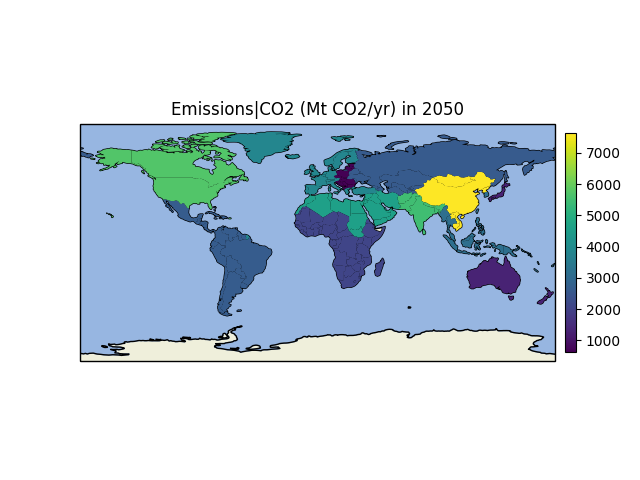

Plot Regional Data¶
Out:
model scenario region variable unit year \
0 MESSAGE-GLOBIOM SSP2-45-SPA2-V25 ABW Emissions|CO2 Mt CO2/yr 2050
1 MESSAGE-GLOBIOM SSP2-45-SPA2-V25 AFG Emissions|CO2 Mt CO2/yr 2050
2 MESSAGE-GLOBIOM SSP2-45-SPA2-V25 AGO Emissions|CO2 Mt CO2/yr 2050
3 MESSAGE-GLOBIOM SSP2-45-SPA2-V25 AIA Emissions|CO2 Mt CO2/yr 2050
4 MESSAGE-GLOBIOM SSP2-45-SPA2-V25 ALA Emissions|CO2 Mt CO2/yr 2050
value
0 2647.685968
1 5492.704661
2 2071.632977
3 2647.685968
4 3837.063686
import matplotlib.pyplot as plt
import pyam
fname = 'msg_input.csv'
df = pyam.IamDataFrame(fname, encoding='ISO-8859-1')
df = (df
.filter({'variable': 'Emissions|CO2', 'year': 2050})
.filter({'region': 'World'}, keep=False)
.map_regions('iso')
)
print(df.head())
df.region_plot()
plt.show()
Total running time of the script: ( 0 minutes 2.453 seconds)